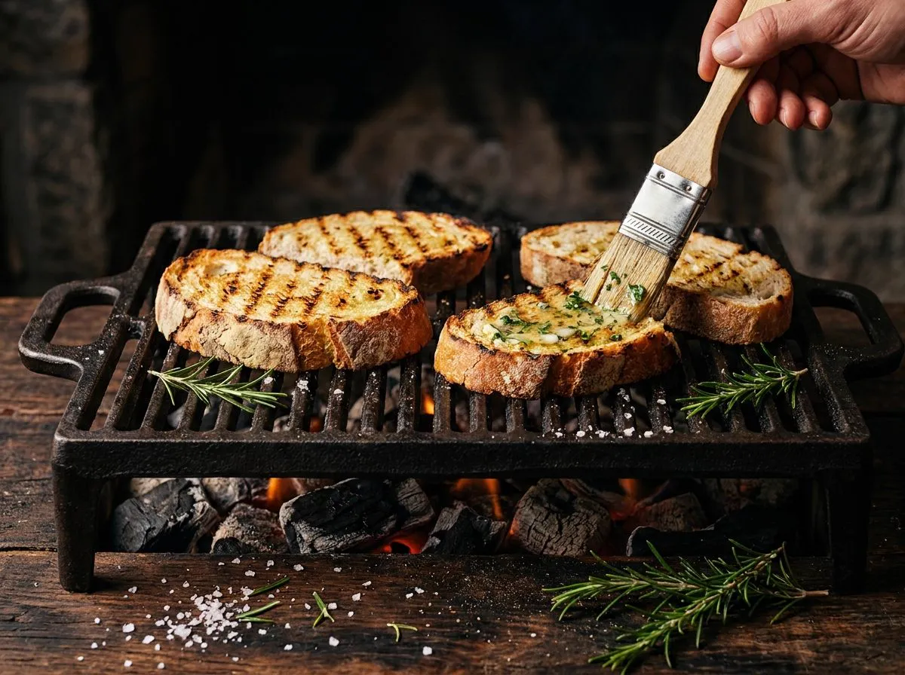

Pan de maíz y pan de ajo en la parrilla
Ingredientes
- Rebanadas gruesas de pan de maíz portugués (broa) y pan rústico
- 100 g mantequilla en pomada · 3 dientes de ajo · perejil · flor de sal
En la brasa
- Mezcla la mantequilla con ajo machacado y perejil picado.
- Unta las rebanadas y llévalas a la parrilla con brasa media: 2-3 min de cada lado, hasta marcar.
- Al retirar, frota con un diente de ajo crudo y remata con flor de sal.
Truco de maestro: el pan de maíz aguanta la brasa mejor que cualquier otro pan: la corteza densa se tuesta sin secarse por dentro.